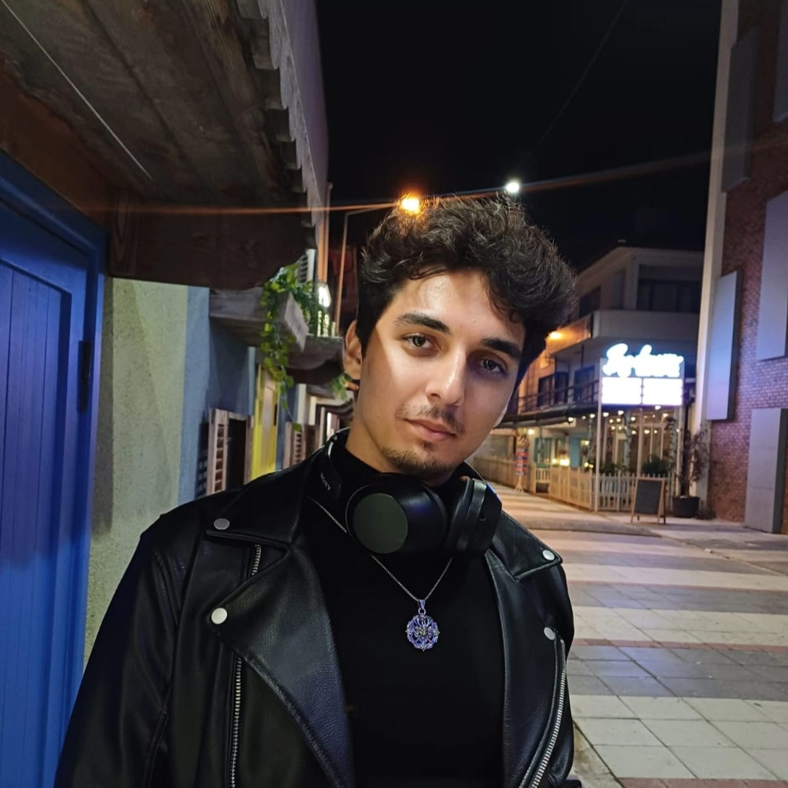

Merhaba, ben Yunus Emre Kurnalı
Bilgisayar mühendisliği öğrencisiyim. 21 yaşındayım, video oyunları ve basketbol oynamayı severim.
Bilgisayar mühendisliği öğrencisiyim. 21 yaşındayım, video oyunları ve basketbol oynamayı severim.
Su altı keşifleri yapmayı seviyorum, deniz altındaki dünya beni büyülüyor.
Çölde çılgınca yolları keşfetmek benim için adrenalin dolu bir keyif.
Doğada vakit geçirmek, gece yıldızların altında uyumak bana huzur veriyor.